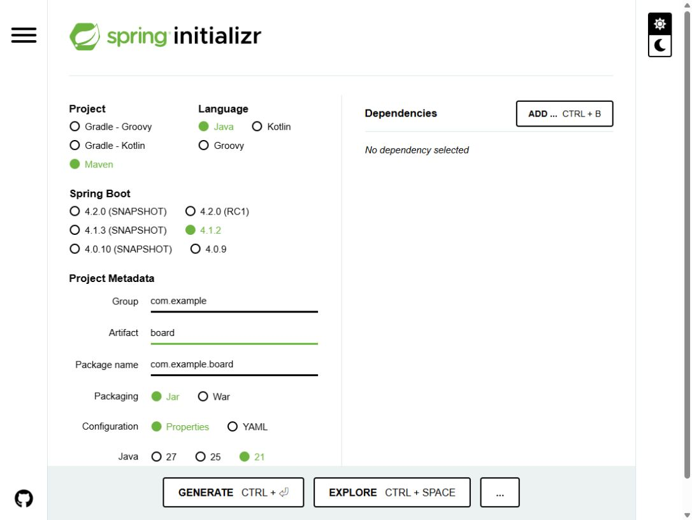
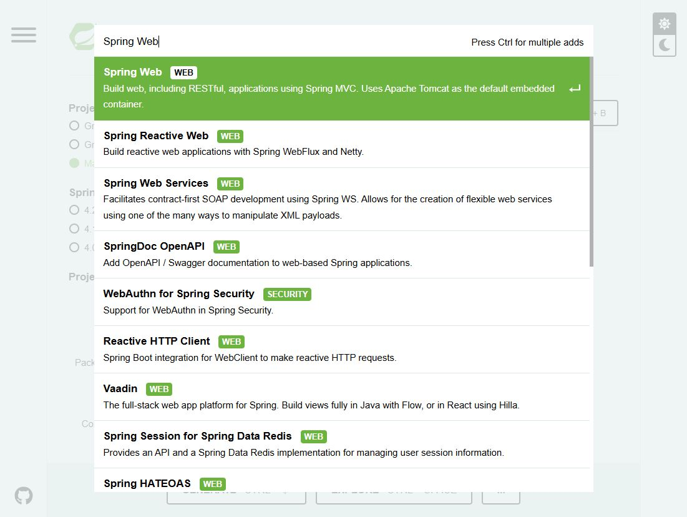
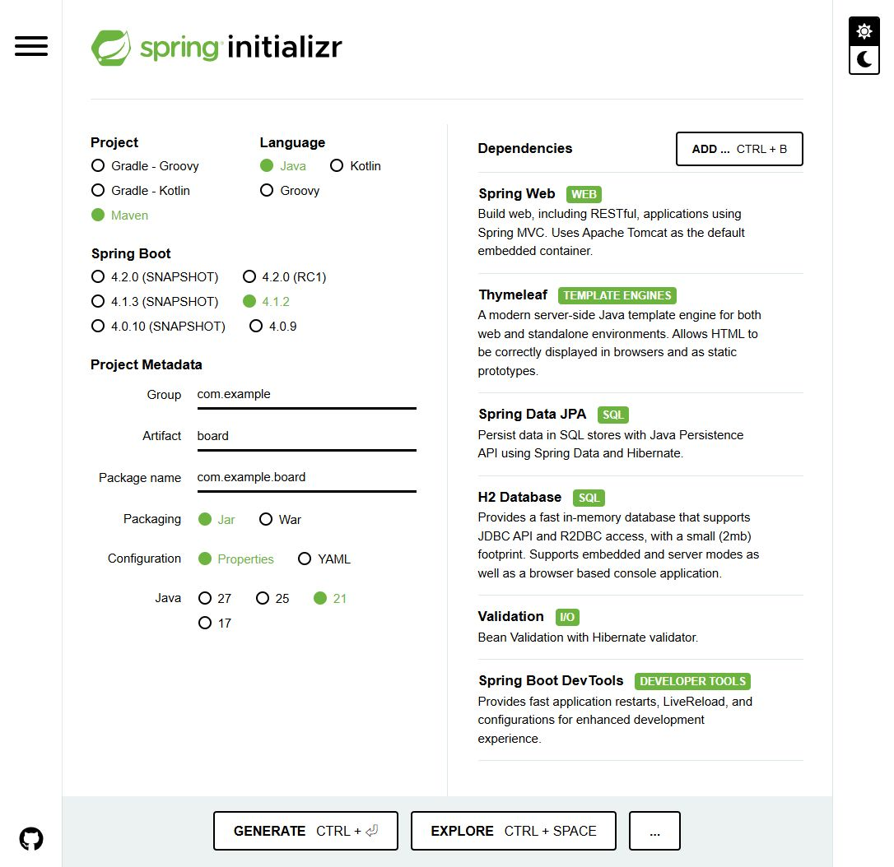
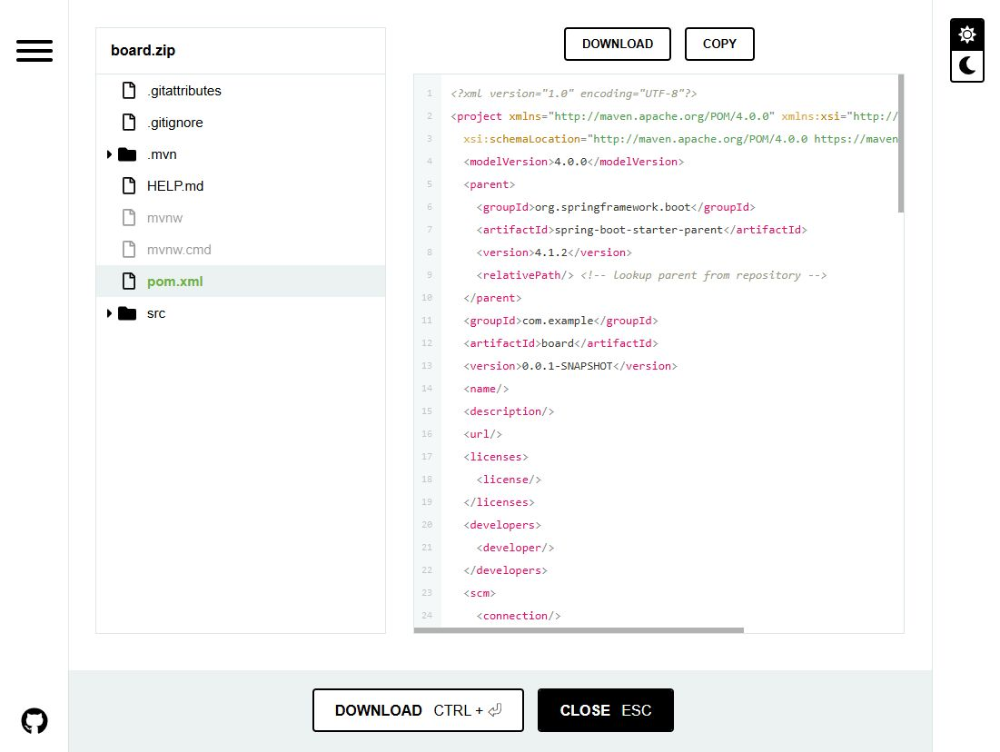

01. 먼저, 어떤 게시판을 만들까요?
이 가이드는 Java + Spring MVC + Thymeleaf로 화면을 만들고, JPA + H2로 데이터를 저장하는 게시판의 시작 설정을 다룹니다. 처음에는 별도 데이터베이스 설치 없이 실행해 보고, 이후 글 목록·상세·등록·수정·삭제 기능을 붙이는 순서입니다.
이번 글의 도착점: 프로젝트를 내려받아 실행하고, 브라우저에서 “게시판 프로젝트 준비 완료” 화면을 확인합니다. CRUD 기능과 회원 인증은 다음 구현 단계입니다.
- 준비물: JDK 21, Visual Studio Code(VS Code), 인터넷 연결.
- 터미널에서
java -version과javac -version을 실행해 JDK를 확인합니다. 이 가이드는 둘 다 21로 맞추는 구성을 권장합니다. - Maven은 ZIP에 포함된 Maven Wrapper로 실행하므로 별도로 설치하지 않아도 됩니다. 첫 실행에는 다운로드 시간이 필요합니다.
spring2는 이 블로그의 폴더 이름입니다. Spring Boot 2를 뜻하지 않습니다.
02. 프로젝트 기본값 입력하기
Spring Initializr 열기 → 왼쪽 항목을 아래 표와 같이 선택합니다. 화면의 초록색 표시가 선택된 값입니다.
| 항목 | 선택 / 입력값 | 선택 이유 |
|---|---|---|
| Project | Maven | pom.xml에서 의존성을 확인하고 Wrapper로 실행합니다. |
| Language | Java | 이번 게시판 예제의 개발 언어입니다. |
| Spring Boot | 4.1.2 | 캡처 시점에 제공되는 정식 버전입니다. |
| Group | com.example |
연습용 패키지의 상위 이름입니다. |
| Artifact | board |
프로젝트와 내려받는 ZIP의 이름입니다. |
| Package name | com.example.board |
자바 소스의 기본 패키지입니다. Artifact 입력 후 확인합니다. |
| Packaging | Jar | 내장 서버를 포함해 단독으로 실행합니다. |
| Configuration | Properties | 이 글의 application.properties 예제와 맞춥니다. |
| Java | 21 | 프로젝트에서 사용할 Java 버전입니다. VS Code의 프로젝트 JDK도 맞춥니다. |

SNAPSHOT은 개발 중인 빌드이고 RC는 정식 출시 전 후보 버전입니다. 처음 따라 할 때는 숫자만 표시된 정식 버전을 선택합니다. 버전 목록은 바뀔 수 있으므로 나중에 4.1.2가 보이지 않으면 제공되는 정식 버전과 Java 호환성을 다시 확인하세요. 공식 시스템 요구사항
03. 게시판에 필요한 의존성 6개 추가하기
오른쪽 ADD … 버튼을 누르고 이름을 검색한 다음 결과를 클릭합니다. 이 과정을 아래 6개 항목에 반복합니다. Windows에서는 Ctrl + B로 검색창을 열 수 있습니다.

| 검색어 / 선택할 이름 | 게시판에서 맡는 역할 | 이번 구성 |
|---|---|---|
| Spring Web | 요청을 컨트롤러로 받고 내장 Tomcat 서버를 실행합니다. | 필수 |
| Thymeleaf | 글 목록·상세·입력 폼을 HTML 화면으로 보여줍니다. | 필수 |
| Spring Data JPA | 게시글 객체를 데이터베이스에 저장하고 조회합니다. | 필수 |
| H2 Database | 별도 설치 없이 로컬 실습용 DB를 사용합니다. | 필수 |
| Validation | 제목 필수 입력, 글 길이 같은 입력값을 검증할 때 사용합니다. | 추가 |
| Spring Boot DevTools | 개발 중 변경 사항을 반영할 때 재시작을 도와줍니다. | 개발 편의 |
Spring Web은 Spring Reactive Web과 다른 항목입니다. 이번 가이드는 MVC를 사용합니다. Lombok은 이 예제에 필요하지 않습니다. 로그인·권한 기능을 구현할 때는 Spring Security를 별도 단계에서 설정합니다.

04. 생성 파일 확인하고 ZIP 다운로드하기
- EXPLORE를 누르면 생성될 프로젝트 파일을 미리 볼 수 있습니다.
pom.xml에서 Spring Boot 버전4.1.2와<java.version>21</java.version>을 확인합니다.- CLOSE로 돌아온 뒤 GENERATE를 누릅니다. 미리보기 하단의 DOWNLOAD로도 ZIP을 받을 수 있습니다.
- 내려받은
board.zip을 압축 해제합니다.pom.xml이 들어 있는 폴더가 프로젝트 루트입니다.

Spring Boot 4.1.2에서 이번 설정으로 생성되는 주요 의존성은 다음과 같습니다. Initializr가 만든 pom.xml을 그대로 사용하면 됩니다.
spring-boot-starter-webmvc
spring-boot-starter-thymeleaf
spring-boot-starter-data-jpa
spring-boot-starter-validation
spring-boot-devtools
com.h2database:h2
spring-boot-h2console
spring-boot-h2console은 이 버전에서 H2 Database를 선택할 때 함께 생성됩니다. 테스트용 의존성도 추가되므로 pom.xml의 dependency 개수가 화면에서 고른 6개보다 많아도 정상입니다. 0.0.1-SNAPSHOT은 내 게시판 프로젝트 버전으로, 위에서 피한 Spring Boot의 SNAPSHOT 버전과 구분합니다.
05. VS Code에서 프로젝트 열기
① Java·Spring 확장 설치
VS Code를 실행하고 왼쪽 Extensions(확장) 아이콘 또는 Windows의 Ctrl + Shift + X를 눌러 다음 두 확장 묶음을 검색해 설치합니다.
| 확장 이름 | 용도 |
|---|---|
| Extension Pack for Java | Java 코드 자동 완성, Maven 프로젝트 인식, 실행·디버깅·테스트 도구를 제공합니다. |
| Spring Boot Extension Pack | Spring 설정 지원과 Spring Boot Dashboard를 제공합니다. |
VS Code 공식 Spring Boot 가이드에서 두 확장 묶음을 확인할 수 있습니다. 이 글에서는 앞서 Spring Initializr 웹사이트에서 받은 ZIP을 사용합니다.
② 압축 해제한 board 폴더 열기
- File → Open Folder…(파일 → 폴더 열기)에서
pom.xml이 들어 있는 폴더를 선택합니다. - 왼쪽 Explorer(탐색기)에
pom.xml,mvnw.cmd,src가 함께 보이는지 확인합니다.src만 열면 프로젝트 루트로 다시 엽니다. - Java 확장이 Maven 프로젝트를 가져오고 의존성을 내려받을 때까지 기다립니다. Java Projects 뷰에서 프로젝트를 확인할 수 있습니다.
src/main/java/com/example/board/BoardApplication.java를 열어main메서드를 확인합니다.
③ 프로젝트 JDK와 터미널 Java 확인
Ctrl + Shift + P로 명령 팔레트를 열고 Java: Configure Java Runtime을 실행합니다.- 프로젝트의 Java 런타임 정보를 확인하고 JDK 21 설치 경로를 등록합니다. JDK가 없다면 Java: Install New JDK에서 21을 선택해 설치할 수 있습니다.
- Maven 프로젝트의 Java 버전은
pom.xml의<java.version>21</java.version>로 유지합니다. 런타임 설정의 기본값만 바꿔서는 Maven의 빌드 버전이 바뀌지 않습니다. - Terminal → New Terminal(터미널 → 새 터미널)에서 PowerShell을 열고 아래 명령을 실행합니다.
java -version
javac -version
.\mvnw.cmd -v
세 출력에서 Java 21 사용 여부를 확인합니다. mvnw.cmd -v는 실제 Maven이 사용하는 Java 경로도 보여 줍니다. 다른 버전이 나온다면 Windows의 JAVA_HOME을 설치한 JDK 21 폴더로, Path의 Java 경로를 해당 JDK의 bin으로 맞춘 뒤 VS Code를 완전히 종료하고 다시 열어 확인합니다. 확장의 Java 런타임 선택과 터미널의 JAVA_HOME은 따로 확인해야 합니다.
VS Code의 Java 상태가 Lightweight이면 상태 표시줄에서 Standard 모드로 전환하고 프로젝트 로딩을 완료합니다. 실행·디버깅에는 의존성을 해석하는 Standard 모드가 필요합니다. 프로젝트 가져오기와 JDK 설정 공식 안내
④ 파일 위치 확인
VS Code 탐색기에서 아래 구조를 확인합니다. 다음 단계부터 이 탐색기에서 설정과 예제 파일을 추가하면 됩니다.
board/ ← pom.xml이 있는 폴더
├─ pom.xml ← 의존성 / Java / Boot 버전
├─ mvnw, mvnw.cmd, .mvn/ ← Maven Wrapper
└─ src/
├─ main/
│ ├─ java/com/example/board/
│ │ └─ BoardApplication.java
│ └─ resources/
│ ├─ application.properties
│ ├─ templates/ ← Thymeleaf HTML
│ └─ static/ ← CSS, JavaScript, 이미지
└─ test/ ← 생성된 테스트
06. 로컬 실습용 DB 설정하기
VS Code 탐색기에서 src/main/resources/application.properties를 열고 아래 내용을 저장합니다. 이 단계는 Initializr에서 받은 뒤 VS Code에서 직접 추가하는 설정입니다.
spring.application.name=board
server.address=127.0.0.1
server.port=8080
spring.datasource.url=jdbc:h2:mem:boarddb
spring.datasource.driver-class-name=org.h2.Driver
spring.datasource.username=sa
spring.datasource.password=
spring.jpa.hibernate.ddl-auto=update
spring.jpa.show-sql=true
spring.jpa.properties.hibernate.format_sql=true
spring.jpa.open-in-view=false
spring.h2.console.enabled=true
spring.h2.console.path=/h2-console
spring.h2.console.settings.web-allow-others=false
jdbc:h2:mem:boarddb는 메모리 DB입니다. 애플리케이션을 완전히 종료하면 게시글 데이터도 사라집니다.ddl-auto=update는 앞으로 만들 Entity에 맞춰 테이블을 갱신하는 로컬 학습용 설정입니다. 운영 DB에는 별도 마이그레이션 방식을 적용합니다.- JPA의
open-in-view=false를 사용하므로 이후 게시판에서는 서비스의 트랜잭션 안에서 필요한 데이터를 조회해 화면에 전달하도록 구현합니다. - H2 콘솔은 로컬 실습용입니다. 서버 주소를
127.0.0.1로 제한했으며 운영 환경에는 이 설정을 그대로 사용하지 않습니다.
07. 첫 화면을 만들고 실행 확인하기
프로젝트만 생성하면 / 주소를 처리하는 화면이 아직 없어 404가 나올 수 있습니다. 아래 두 파일을 추가해 웹 요청과 Thymeleaf 렌더링이 연결되는지 확인합니다.
① HomeController.java 추가
위치: src/main/java/com/example/board/HomeController.java
package com.example.board;
import org.springframework.stereotype.Controller;
import org.springframework.ui.Model;
import org.springframework.web.bind.annotation.GetMapping;
@Controller
public class HomeController {
@GetMapping("/")
public String home(Model model) {
model.addAttribute("message", "게시판 프로젝트 준비 완료");
return "index";
}
}
② index.html 추가
위치: src/main/resources/templates/index.html
<!DOCTYPE html>
<html lang="ko" xmlns:th="http://www.thymeleaf.org">
<head>
<meta charset="UTF-8">
<meta name="viewport" content="width=device-width, initial-scale=1">
<title>게시판 시작</title>
</head>
<body>
<h1 th:text="${message}">준비 중</h1>
<p>Spring MVC와 Thymeleaf가 정상 연결되었습니다.</p>
</body>
</html>
컨트롤러의 return "index"는 templates/index.html을 가리킵니다. 블로그의 spring2/index.html과는 서로 다른 파일입니다.
③ VS Code 통합 터미널에서 실행
파일을 저장한 뒤 Terminal → New Terminal(터미널 → 새 터미널)을 엽니다. 터미널의 현재 위치가 pom.xml이 있는 폴더인지 확인합니다. VS Code의 Run/Debug나 다른 터미널에서 이미 실행 중이면 먼저 종료하세요.
Windows PowerShell
.\mvnw.cmd -v
.\mvnw.cmd test
.\mvnw.cmd spring-boot:run
macOS / Linux
chmod +x mvnw
./mvnw -v
./mvnw test
./mvnw spring-boot:run
-v 출력에서 사용하는 Java 버전과 경로를 확인합니다. 실행 로그에 Started BoardApplication과 Tomcat의 8080 포트 시작 메시지가 나오면 브라우저에서 http://localhost:8080을 엽니다.
성공 기준: “게시판 프로젝트 준비 완료”와 “Spring MVC와 Thymeleaf가 정상 연결되었습니다.”가 표시됩니다. 터미널에서 Ctrl + C를 누르면 서버가 종료됩니다.
VS Code의 실행 버튼을 사용하려면: 터미널에서 실행한 서버를 먼저 종료하고 BoardApplication.java의 main 메서드 위 Run 또는 Debug를 클릭합니다. F5로 디버깅을 시작하거나 Spring Boot Dashboard에서 board 프로젝트를 시작·중지할 수도 있습니다. 중단점은 코드 왼쪽 여백에 표시하고 Debug로 실행합니다. 디버깅 종료는 상단 Stop 버튼 또는 Shift + F5를 사용합니다. VS Code Java 실행·디버깅 공식 안내
④ H2 콘솔 접속 확인
애플리케이션이 실행 중일 때 http://localhost:8080/h2-console에 접속합니다.
| 입력 항목 | 값 |
|---|---|
| Driver Class | org.h2.Driver |
| JDBC URL | jdbc:h2:mem:boarddb |
| User Name | sa |
| Password | 빈칸 |
Connect를 눌러 연결되면 DB 준비도 끝났습니다. 아직 Entity를 만들지 않았으므로 게시글 테이블이 없는 것이 정상입니다. 콘솔의 기본 JDBC URL을 그대로 두지 말고 위 값으로 바꿔 주세요.
08. 자주 막히는 지점과 다음 단계
| 증상 | 확인할 내용 |
|---|---|
release version 21 not supported |
VS Code 터미널의 .\mvnw.cmd -v에서 Java 버전을 확인합니다. JAVA_HOME과 프로젝트의 JDK 21 설정을 맞춥니다. |
JAVA_HOME 관련 오류 |
JDK가 설치되어 있는지, JAVA_HOME이 bin이 아닌 JDK 폴더를 가리키는지 확인하고 터미널을 다시 엽니다. |
| 8080 포트가 이미 사용 중 | 기존 실행을 종료하거나 server.port=8081로 변경한 뒤 localhost:8081에 접속합니다. |
| 첫 실행에 오래 걸림 / 의존성 다운로드 실패 | 인터넷·프록시 설정과 Maven 다운로드 오류를 확인합니다. 프로젝트를 다시 만들기 전에 원인 메시지를 읽습니다. |
| VS Code에 Run/Debug가 보이지 않음 | Extension Pack for Java 설치, pom.xml이 있는 폴더 열기, 프로젝트 로딩 완료, Java Standard 모드 여부를 확인합니다. |
| Java 프로젝트가 인식되지 않음 | 명령 팔레트에서 Java: Import Java projects in workspace를 실행합니다. 의존성 인식 문제가 계속되면 Java: Clean Java Language Server Workspace로 Java 작업 영역을 다시 로드합니다. |
| 첫 화면에서 404 | HomeController가 com.example.board 아래 있는지, @Controller와 @GetMapping("/")가 있는지 확인합니다. |
| 템플릿을 찾을 수 없음 | 파일이 static이 아니라 templates/index.html에 있는지, Thymeleaf가 추가됐는지 확인합니다. |
| H2 콘솔 404 | 설정 저장 후 재시작하고 spring-boot-h2console 의존성 및 콘솔 경로를 확인합니다. |
| H2 DB가 없다는 메시지 | 서버 실행 상태와 JDBC URL jdbc:h2:mem:boarddb가 일치하는지 확인합니다. |
다음에는 Board Entity → BoardRepository → BoardService → BoardController → Thymeleaf 화면 순서로 구현합니다. 목록·상세·등록을 먼저 연결하고, 수정·삭제·입력값 검증을 추가하면 기본 게시판 흐름을 완성할 수 있습니다.
완료 체크리스트
- [ ] Maven / Java / 정식 Spring Boot / Jar / Properties / Java 21 선택
- [ ] Group
com.example, Artifactboard, Packagecom.example.board확인 - [ ] 의존성 6개 추가 및
board.zip다운로드 - [ ] VS Code에 Extension Pack for Java와 Spring Boot Extension Pack 설치
- [ ] VS Code에서 board 폴더 열기 및 프로젝트 JDK·터미널 Java 21 확인
- [ ] 로컬 H2 설정과 첫 화면 예제 추가
- [ ] 테스트 통과, 첫 화면 표시, H2 연결 확인
참고한 공식 자료
- Spring Initializr — 설정 화면과 생성 프로젝트
- Spring Boot 시스템 요구사항 — Java·빌드 도구 호환성
- Serving Web Content with Spring MVC — MVC와 Thymeleaf 연결
- Accessing Data with JPA — JPA와 H2
- Validating Form Input — 입력 검증
- Spring Boot in VS Code — Java·Spring 확장 설치와 Dashboard
- Managing Java Projects in VS Code — 폴더 열기, Maven 인식, JDK 설정
- Running and debugging Java — Run/Debug와 F5 실행
화면 캡처 및 설정 확인: 2026-10-27 (한국 시간). 캡처는 Spring Initializr의 실제 화면이며, 사이트 개편이나 버전 업데이트에 따라 표시가 달라질 수 있습니다.